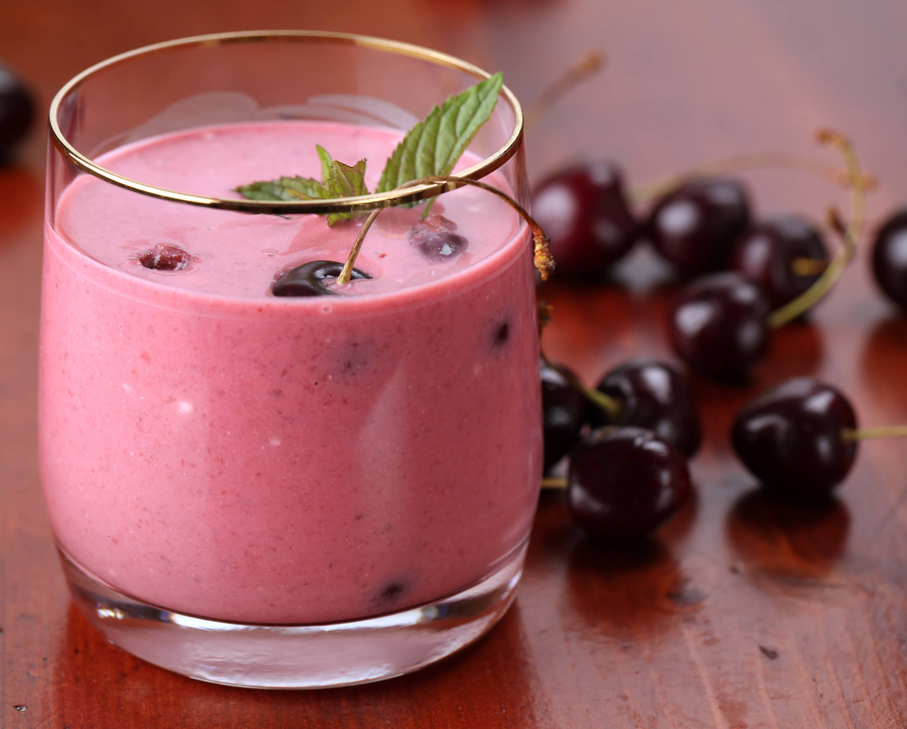

Berry Cherry Smoothie
Back to All Recipes

Image credit: MariaPolna on pxhere
Ingredients
- Handful of fresh or frozen spinach
- 3/4 cup of frozen mixed berries
- 1/4 cup of frozen cherries
- 1/2 cup of plain greek yogurt (opt. nonfat)
- 3/4 cup of pineapple juice
Optional
- 1 scoop of protein powder
- 2 tablespoon of flax seed meal
- 1 tablespoon of hemp seed hearts
Directions
- Add spinach to the bottom of your blender cup.
- Add berries, cherries, greek yogurt, and protein powder.
- Add any other optional additions.
- Pour pineapple juice over ingredients
- Blend until throughly mixed to your desired texture
- Pour into cup. Enjoy with a spoon or straw.
- Save extra for a second serving.